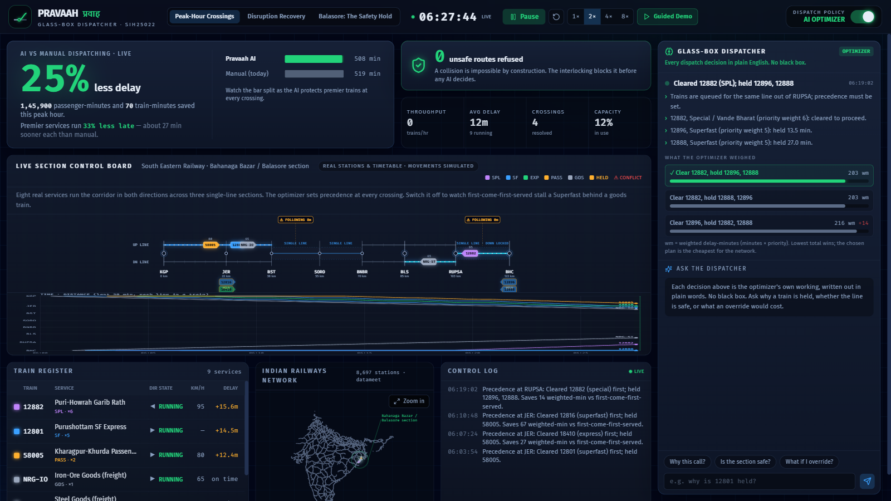
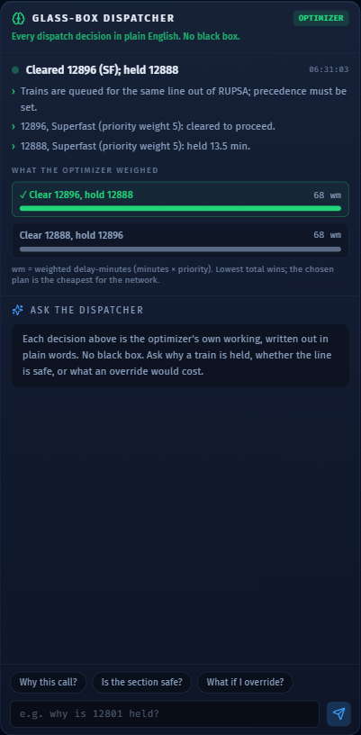
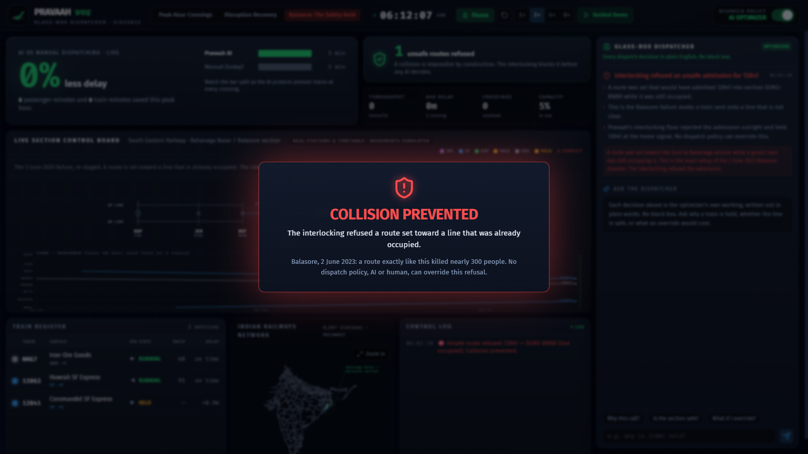

PRAVAAH
The Glass-Box Dispatcher
An open, explainable AI co-pilot for the person who decides which train waits at every crossing:
the Indian Railways section controller. Live and working.
LIVE garvitsurana271.github.io/pravaah CODE github.com/garvitsurana271/pravaah
The problem
India still dispatches
every crossing by hand
2 June 2023, near Balasore: a signalling failure put two trains on one line. Nearly 300 people died. The line had no Kavach.
Every day, a human controller decides who waits at each crossing from memory. The control-room software shows where trains are. It does not make the call.
Punctuality has fallen from 94% to about 74% in three years, and most of the busiest corridors now run over capacity.
This is real, and running

Two dispatchers on the same trains: an AI optimizer, and first-come-first-served, the way it is done today.
The result
25%
less weighted delay than dispatching by hand
On the live peak-hour run: about 1.46 lakh passenger-minutes saved, and premier
trains — Superfast and above — reach their destination 33% sooner, roughly 27 minutes
each, because the AI protects them at every crossing. Same trains, same track, smarter precedence.
What makes it different

It explains every decision in plain words, built from the optimizer's own numbers. No black box. Ask it anything.
Safe by design

It refuses to cause a collision. Here it re-stages the 2 June 2023 Balasore failure, and blocks it.
The safety floor
0
unsafe states, ever
A separate interlocking layer makes a collision impossible, no matter what the AI wants. Balasore, 2023:
a route exactly like that killed nearly 300 people.
Why this matters
Crore-scale black boxes,
or nothing at all
India still dispatches every crossing by hand. Punctuality fell from 94% to about 74% in three years.
The AI systems that exist cost over a thousand crore, are closed, and stay advisory, because controllers do not trust a black box.
Nothing open, explainable, and India-specific exists. That is the gap Pravaah fills.
We avoided reinforcement learning on purpose: the evidence shows classical optimization beats it, and RL has never been deployed.
How real, how it works
Real data, two honest layers
8,697 real Indian stations and real timetabled services, from the open datameet dataset.
Interlocking layer: one train per block, single lines locked to one direction. Unsafe states impossible, in code.
Dispatcher layer: the AI only orders moves that are already safe, and writes a full trace for the glass box.
Pure TypeScript, in the browser, 12 passing tests. Movement is simulated, since India has no open live feed; the engine is built to take one.
Open. Explainable.
Safe by design.
The control-room brain Indian Railways does not have yet. Answers problem statement SIH25022, Ministry of Railways.
LIVE garvitsurana271.github.io/pravaah CODE github.com/garvitsurana271/pravaah